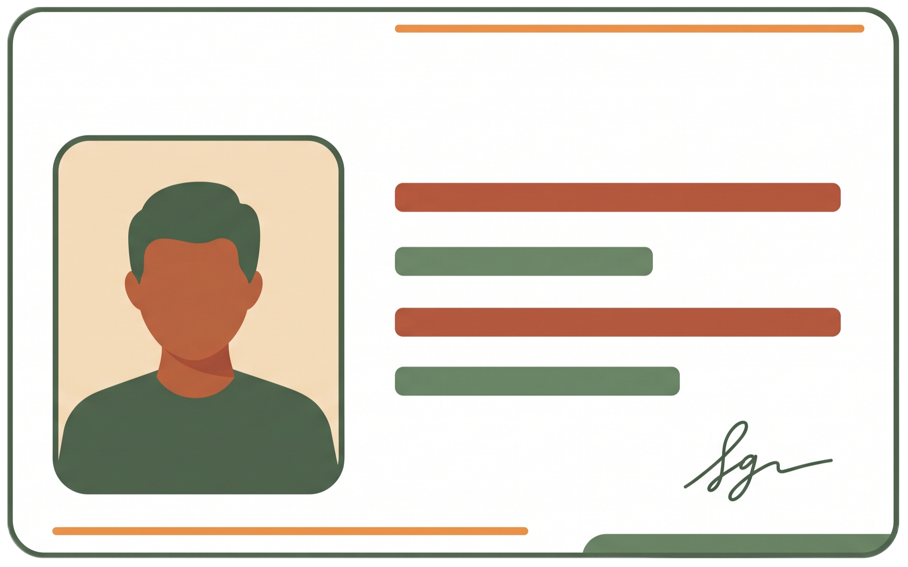
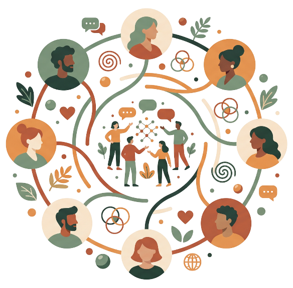
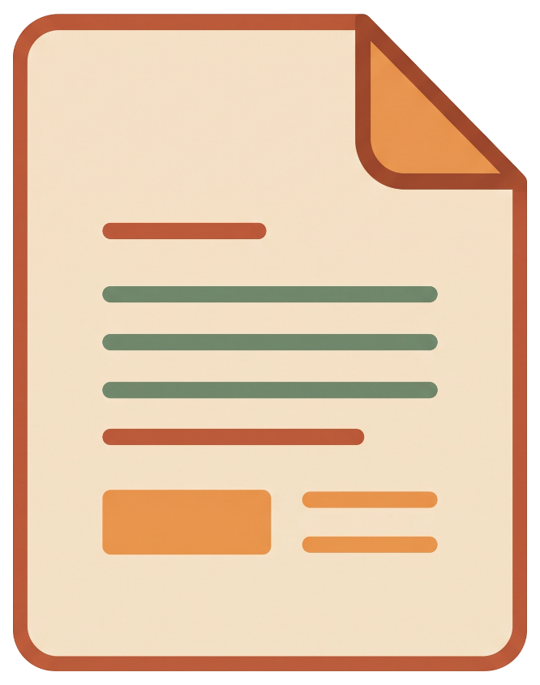
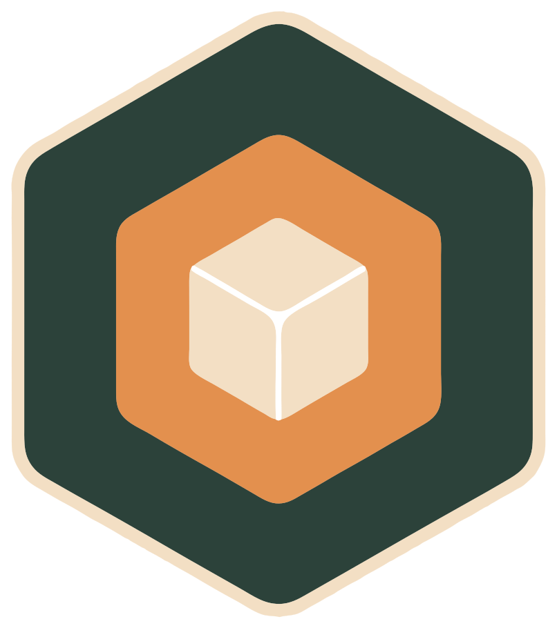
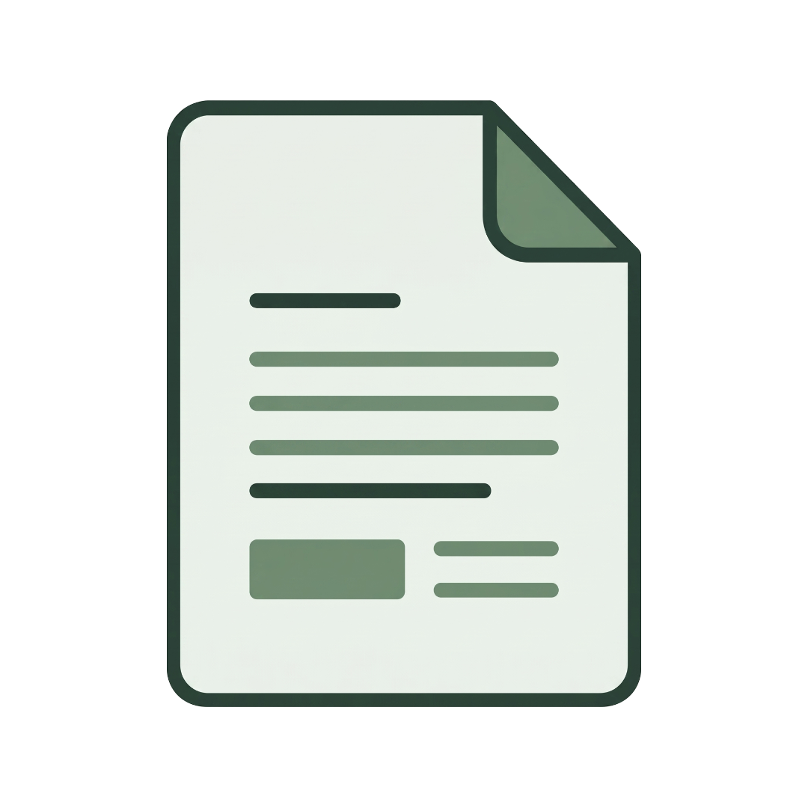
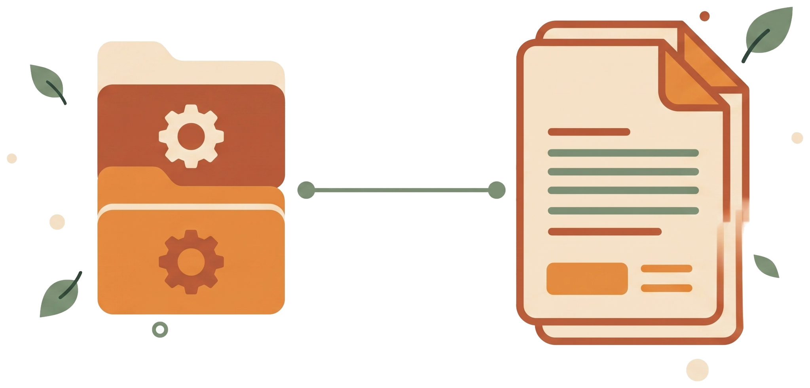
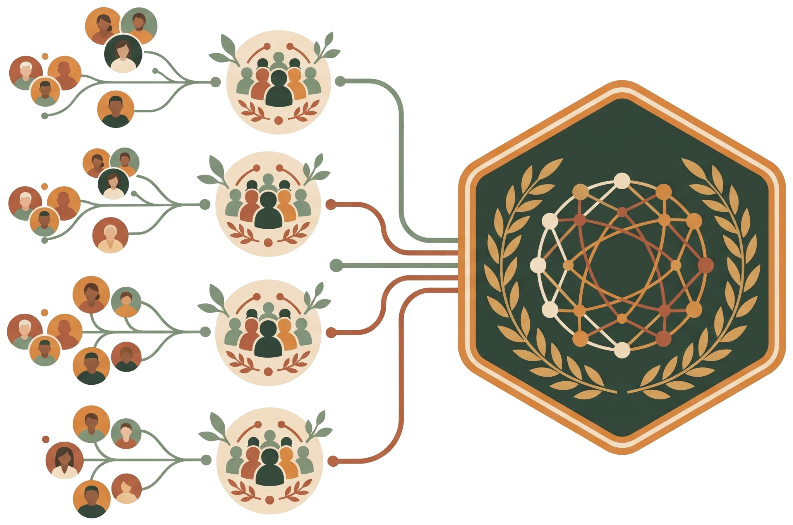
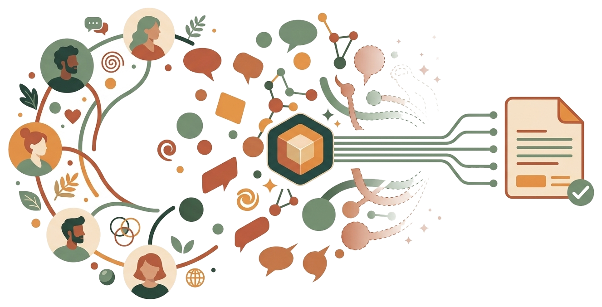
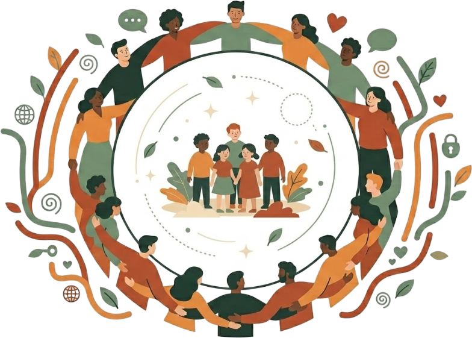

Edifício das Flores
CondomínioDecisões prediais e melhorias nas áreas comuns
Uma pessoa real. Uma voz única. Sem farsantes.
Sua chave criptográfica garante que ninguém ninguém fala por você.

Onde você vive e faz a diferença de forma horizontal, sem
privilégios.
Todos e apenas membros tem uma cópia identica dos dados.

Decisões prediais e melhorias nas áreas comuns
Melhorias urbanas, praça e segurança local
O problema real que o grupo busca resolver com uma proposta bem estruturada.

Trocar o motor antigo e melhorar a segurança da entrada.
Unimos o que há em comum e destacamos apenas os pontos divergentes. Você pode apoiar a melhor versão ou criar uma nova.


Sem privilégios, apenas o consenso da comunidade pode escolher a melhor proposta!

Propostas de melhorias podem ser feitas de forma simples e dinâmica. Temos diversos tempaltes e modelos de documentos organizados em categorias para facilitar a elaboração de propostas completas e claras.

Para problemas que ultrapassam os limites de um único grupo, as comunidades se associam em sociedades e federações colaborativas. Uma arquitetura modular que preserva a soberania de cada participante em qualquer escala.

Debates podem (e devem) ser feitos livremente no chat. O assistente organiza e sintetiza as ideias do coletivo, transformando-as em uma proposta clara e consisa. Conversas dispersas dão lugar a conversas produtivas com tempo otimizado.
Decisões transparentes, invioláveis e soberanas. O poder de decidir permanece sempre com a comunidade.
Todas as suas propostas e apoios são assinados digitalmente. É impossível fraudar votos, votar em duplicidade ou participar por outra pessoa.
Nenhum servidor central ou empresa intermediária tem controle dos dados. As informações ficam replicadas entre os próprios membros da comunidade.
Uma vez atingido o quórum, o resultado gera um registro definitivo. Ninguém pode apagar ou alterar a vontade coletiva aprovada.
O sistema representativo tradicional foi criado em uma época que ouvir milhares de pessoas ao mesmo tempo era impossível. A tecnologia mudou esse cenário.

Você não precisa mais esperar que decidam por você.